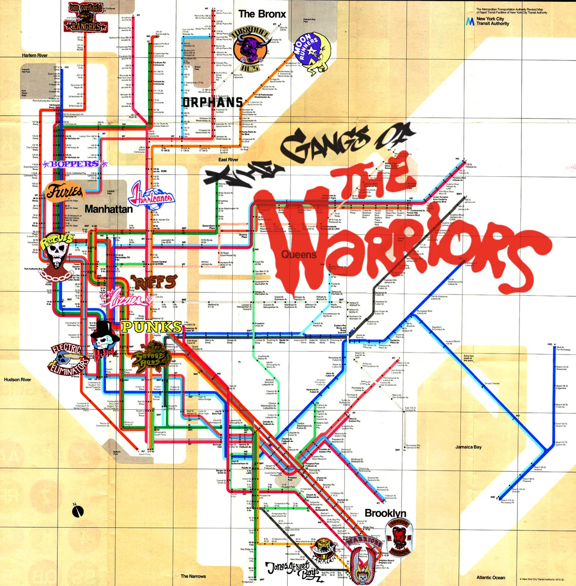

Informacion General:
Todas las pandillas pertenecen a Nueva York en diferentes barrios o distritos, dichas pandillas se las puede ubicar gracias a un mapa de Trenes con sus estaciones dentro del juego, las pandillas de cada terreno son famosas ya sea por su reputación o su grandeza, por lo que los territorios en donde ellos se instalan son porque lo ganaron luchando para ser reconocidos. Pero también existen pandillas que están dispersas en el mapa como es el caso de una no muy conocida que se llama Black Hands, los cuales aparecen en el juego, pero como una ayuda en cada misión en cada territorio por lo que su territorio es desconocido.
